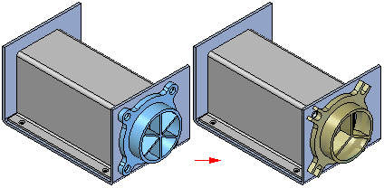
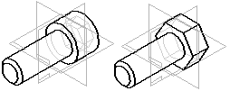
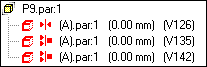

Replacing parts in assemblies
At times you may need to replace a part or subassembly in an assembly with a new part or subassembly. For example, a part may be placed in multiple assemblies, and at a later time, the part needs to be redesigned for one assembly only. After creating a new version of the part, you can replace the existing part using the Replace command.
In the Teamcenter-managed environment, you should use the Revisions command to replace an item with a different revision of the same item.

Replacing Parts commands
The table below contains different replace part commands, which are designed for specific functions.
|
Replace Part |
Used to replace a part. |
|
Replace Part with Standard Part |
Used to replace an existing part with a standard part. |
|
Replace Part with New Part |
Used to replace an existing part with a part created in the context of an assembly. The Create in Place command is used to construct the new part. |
|
Replace Part with Copy |
Copies the part by doing a Save As, which allows the new part to be renamed. |
|
Replace Part with 3Dfind.it Part |
Used to replace an existing part with a part from the 3Dfind.it parts website that searches millions of manufacturer models. |
When replacing a part with a new part or with a copy, if you are a Solid Edge data management user and you selected the option Automatically name files via Document Number and Revision, the system displays a dialog box where you can assign common properties, such as document number and revision number, as explained in Create documents with unique properties. If you also selected the option Automatically revise or copy drawings that use the selected 3D document, Solid Edge automatically copies and revises drawings that use the selected 3D document. If there are multiple drafts, the system adds an increment ID between the document number and revision number. For example, test1-1.dft, test1-01-1.dft, test1-02-1.dft, and so on.
To learn more about being a Solid Edge data management user, see Solid Edge data management.
Replacing similar parts
When you replace a part with a new version of the same part, Solid Edge attempts to use the existing assembly relationships to position the new version. However, if any faces used to position the old part were consumed when the part was modified; assembly relationships can fail. If this occurs, you can delete the affected assembly relationships using PathFinder, and then apply new relationships to completely position the new part.
You can also use a member of a family of parts as a replacement part. If the current part is not a family of parts member, and you want to replace it with a family of parts member, use the Replacement Part dialog box to select a family of parts member as the replacement part.
If the current part is a member of a family of parts, the Family of Parts Member dialog box is automatically displayed when you select the part you want to replace. You can then specify another family member you want to use as the replacement part. If you want to replace the family of parts member with any other part, click the Browse button on the Family of Parts Member dialog box to display the Replacement Part dialog box. This allows you to select any part as the replacement part.
Replacing dissimilar parts
When you replace a part with a different part, one that was created independently of the part being replaced, Solid Edge compares the geometry of the two parts. If the geometry matches sufficiently, the replacement part is positioned properly.
When replacing dissimilar parts, the original part and the replacement part are required to be in the same relative orientation in their respective part files.

Replacing one occurrence of a part
If the part you are replacing has been placed more than once in the active assembly, you can specify whether to replace all occurrences of the part, or only the selected one.
Replacing parts in subassemblies
The Replace command can be used to replace parts in a subassembly.
Replacing subassemblies
When you replace a subassembly, you can replace it with another subassembly or you can replace it with a part. If the current or replacement subassembly is also a family of assemblies, you can use the Assembly Member dialog box to specify which family member you want to use as the replacement.
For more information on working with families of assemblies, see the Family of Assemblies and Alternate Position Assemblies topic in online Help.
Failed relationships during part replacement
Assembly relationships can fail when you are replacing parts. Normally, this happens because the assembly cannot locate the faces in the new part that it was connected to in the old part. When this occurs, a symbol displays to the left of the failed relationship in the lower pane of the PathFinder.

Replacing renamed occurrences
When you replace an assembly occurrence whose default name in PathFinder has been overridden using the Rename or Occurrence Properties commands on the PathFinder shortcut menu, you can control whether the replacement occurrence uses the new document name or the overridden name in PathFinder.
When you set the Use Default Placement Name During Replace Part option on the Assembly tab on the Options dialog box, the document name of the replacement occurrence is used. When you clear this option, the overridden name is maintained.
When you override the name of an assembly occurrence, the actual document name is not changed.
Define Alternate Components
Alternate components are a predefined list of components that aid in placement of replacing parts. The list consists of alternate candidates that can be added or removed from the list. These lists can originate from related family documents, searched documents, and browsed documents.
How do I
Create a one body assemblyRepair Missing Files
Replace a part in an assembly
Replace a part with a part from 3Dfind.it
Scroll to a part
Look up more details
Creating a single design body from an assemblyRepair Missing Files command
Replace Part command
Replacing a part with a part from 3Dfind.it
Replacement Part dialog box